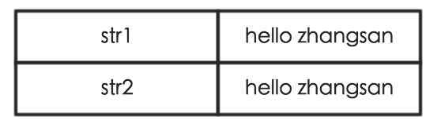
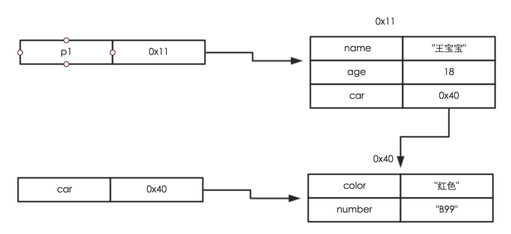
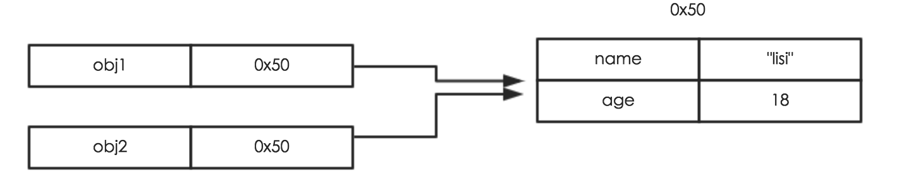

01 值类型和引用类型简单说明
值类型主要有：
数值
字符串
布尔类型
undefined
null
引用类型主要有：
对象（Object类型）
数组（Array）
函数 (Function)
值类型：保存为简单的数据值，赋值只是简单的数据值的复制
引用类型:保存为对象，其本质是指向内存位置的引用(地址)，赋值是对地址的复制
值类型代码示例
var num1 = 10;
var num2 = num1; //把num1的值复制一份给num2,num1和num2的值相等,除此之外没有任何其他关系
console.log(num1,num2); //10,10
console.log(num1 == num2); //true
num2 = 20; //修改num2的值为20,不会对num1产生任何的影响
console.log(num1,num2); //10,20
console.log(num1 == num2); //false
引用类型代码示例
var arr1 = [1,2,3];
var arr2 = arr1;
console.log(arr1,arr2); //[1,2,3],[1,2,3]
console.log(arr1 == arr2); //true
var arr3 = [1,2,3];
console.log(arr3); //[1,2,3]
console.log(arr1 == arr3,arr2 == arr3); //false,false
/**
* 代码说明:
* arr1和arr2在比较的时候,值相等(都是[1,2,3]),且引用相等(都指向堆中同一块数据),因此arr1和arr2相等
* arr3和arr1以及arr2比较的时候,值相等([1,2,3]),但是引用不相等(arr3指向的是堆中另外一块数据),因此不等
* 总结:引用类型在比较相等的时候,只有值和引用都相等才相等
* */
02 值类型和引用类型的赋值
赋值操作(=):把当前变量存储的值复制一份给接收的变量
值类型的赋值:把当前变量存储的值(具体的数据)复制一份给接收的变量
引用类型的赋值:把当前变量存储的值(具体数据的引用即地址)复制一份给接收的变量
//引用类型使用注意
console.log(arr1,arr2); //[1,2,3],[1,2,3];
console.log(arr1 == arr2); //true
arr1.push(4);
console.log(arr1,arr2); //[1,2,3,4],[1,2,3,4]
/**
* 代码说明:因为arr1和arr2内部的引用指向的是同一块数据,所以修改了arr1会对arr2也产生影响
* */
03 值类型和引用类型作为函数参数处理
形参:占位用的参数,用来接收数据的参数而已
实参:实际传递的参数 ---
函数的调用:在函数调用的时候,函数默认会把实参的值赋值给形参
值类型作为参数：在函数内部对形参变量进行修改不会影响到实参的值
引用类型作为参数：在函数内部对形参变量进行修改会影响到实参的值，因为他们的引用指向同一个对象
04 值类型和引用类型的相关图示
基本类型的赋值
var str1 = "hello zhangsan";
var str2 = str1;

引用类型的结构和赋值
var car = {
color:"黑色",
number:"B99"
};
var p1 = {
name:"王宝宝",
age:30,
car:car
};

var obj1 = {
name:"lisi",
age:18
};
var obj2 = obj1;
